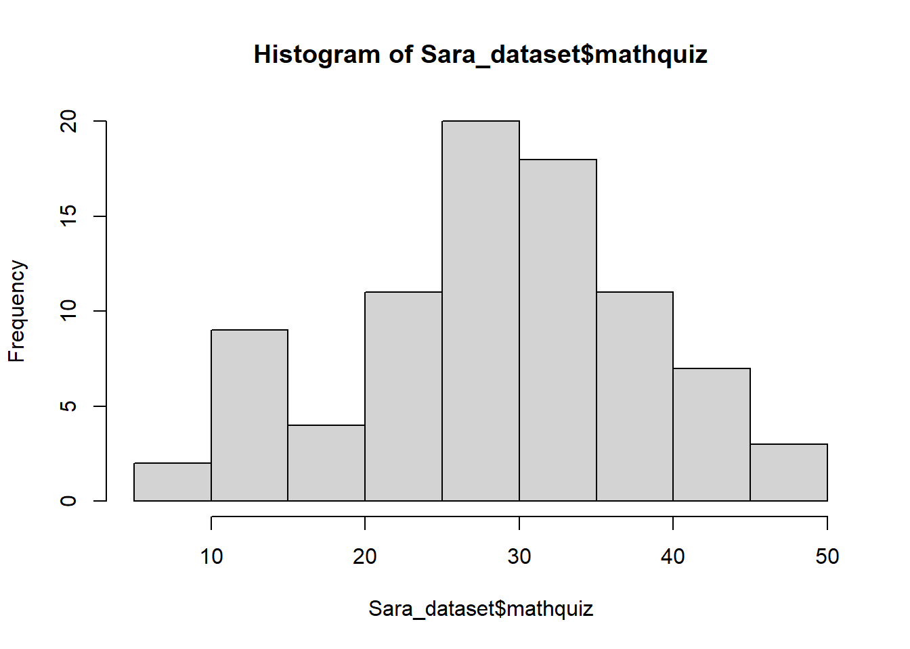
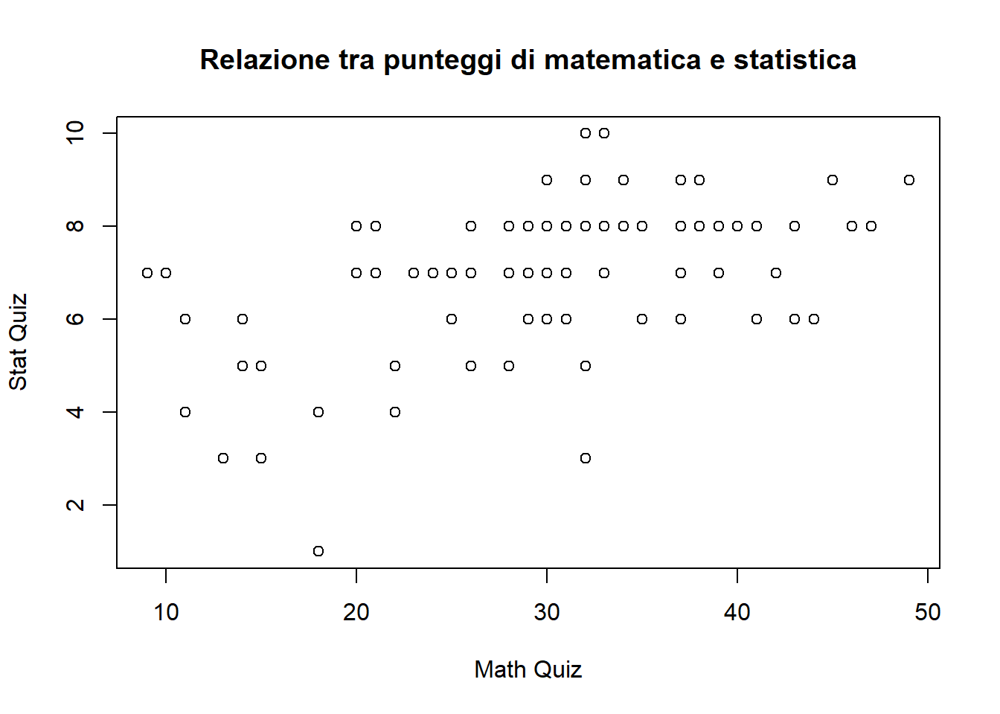
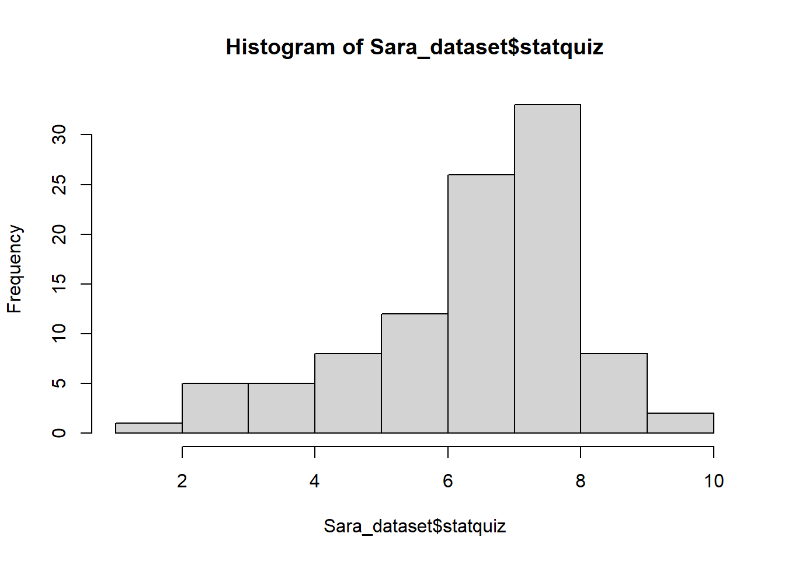

rm(list=ls())
library(readxl)
Sara_dataset <- read_xls("Sara_dataset.xls")Analisi del dataset Sara
names(data())[1] "title" "header" "results" "footer" names(Sara_dataset) [1] "gender" "major" "cond" "phobia" "prevmath" "mathquiz"
[7] "statquiz" "hr_base" "hr_pre" "hr_post" "anx_base" "anx_pre"
[13] "anx_post"head(Sara_dataset)# A tibble: 6 × 13
gender major cond phobia prevmath mathquiz statquiz hr_base hr_pre hr_post
<dbl> <dbl> <dbl> <dbl> <dbl> <dbl> <dbl> <dbl> <dbl> <dbl>
1 1 1 1 1 3 43 6 71 68 65
2 1 1 1 1 4 49 9 73 75 68
3 1 1 1 4 1 26 8 69 76 72
4 1 1 1 4 0 29 7 72 73 78
5 1 1 1 10 1 31 6 71 83 74
6 1 1 2 4 1 20 7 70 71 76
# ℹ 3 more variables: anx_base <dbl>, anx_pre <dbl>, anx_post <dbl>sapply(Sara_dataset, class) gender major cond phobia prevmath mathquiz statquiz hr_base
"numeric" "numeric" "numeric" "numeric" "numeric" "numeric" "numeric" "numeric"
hr_pre hr_post anx_base anx_pre anx_post
"numeric" "numeric" "numeric" "numeric" "numeric" Statistiche descrittive Sara Data
summary(Sara_dataset) gender major cond phobia prevmath
Min. :1.00 Min. :1.00 Min. :1.00 Min. : 0.00 Min. :0.00
1st Qu.:1.00 1st Qu.:1.00 1st Qu.:1.75 1st Qu.: 1.00 1st Qu.:1.00
Median :1.00 Median :2.00 Median :2.50 Median : 3.00 Median :1.00
Mean :1.43 Mean :2.52 Mean :2.50 Mean : 3.31 Mean :1.38
3rd Qu.:2.00 3rd Qu.:3.25 3rd Qu.:3.25 3rd Qu.: 4.00 3rd Qu.:2.00
Max. :2.00 Max. :5.00 Max. :4.00 Max. :10.00 Max. :6.00
mathquiz statquiz hr_base hr_pre hr_post
Min. : 9.00 Min. : 1.00 Min. :64.00 Min. :62.00 Min. :64.0
1st Qu.:22.00 1st Qu.: 6.00 1st Qu.:70.00 1st Qu.:70.00 1st Qu.:69.0
Median :30.00 Median : 7.00 Median :72.00 Median :74.00 Median :73.0
Mean :29.07 Mean : 6.86 Mean :72.27 Mean :73.85 Mean :72.8
3rd Qu.:35.00 3rd Qu.: 8.00 3rd Qu.:74.00 3rd Qu.:78.00 3rd Qu.:76.0
Max. :49.00 Max. :10.00 Max. :80.00 Max. :87.00 Max. :86.0
NA's :15
anx_base anx_pre anx_post
Min. :10.00 Min. : 8.00 Min. : 9.0
1st Qu.:16.00 1st Qu.:14.00 1st Qu.:16.0
Median :18.00 Median :19.00 Median :19.0
Mean :18.43 Mean :19.58 Mean :19.4
3rd Qu.:20.00 3rd Qu.:25.00 3rd Qu.:22.0
Max. :39.00 Max. :39.00 Max. :40.0
summary(Sara_dataset$mathquiz) Min. 1st Qu. Median Mean 3rd Qu. Max. NA's
9.00 22.00 30.00 29.07 35.00 49.00 15 hist(Sara_dataset$mathquiz)
hist(Sara_dataset$mathquiz)
Come mostrato nella Figura Figure 1, la distribuzione dei punteggi nel Math Quiz mostra la frequenza dei risultati ottenuti dagli studenti.
Relazione tra Math Quiz e Stat Quiz
plot(Sara_dataset$mathquiz,
Sara_dataset$statquiz,
xlab = "Math Quiz",
ylab = "Stat Quiz",
main = "Relazione tra punteggi di matematica e statistica")
Distribuzione dei punteggi
Distribuzione Math Quiz
hist(Sara_dataset$mathquiz)
Distribuzione Stat Quiz
hist(Sara_dataset$statquiz)
I risultati del Math Quiz sono particolarmente importanti per l’analisi dei dati.
Il dataset contiene 100 osservazioni e 13 variabili.
Conclusione
In questo lavoro abbiamo analizzato il dataset Sara_dataset utilizzando R e Quarto. Sono stati creati grafici per esplorare la distribuzione dei punteggi nei quiz di matematica e statistica.